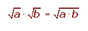
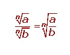
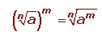
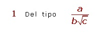
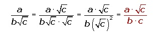
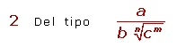
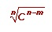
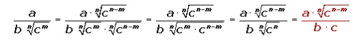
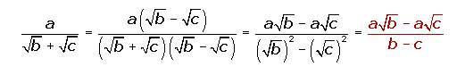

propiedades o leyes de los radicales
Producto de los radicales...radicales del mismo indice
Para multiplicar radicales con el mismo índice se multiplican los radicandos y se deja el mismo índice.

Radicales de distinto índice Primero se reducen a índice común y luego se multiplican. Cociente de radicales
Para dividir radicales con el mismo índice se dividen los radicandos y se deja el mismo índice.

Radicales de distinto índice Primero se reducen a índice común y luego se dividen. Potencia de radicales
Para elevar un radical a una potencia se eleva a dicha potencia el radicando y se deja el mismo índice.

Raíz de un radical:
La raíz de un radical es otro radical de igual radicando y cuyo índice es el producto de los dos índices.
Racionalizar radicales
Consiste en quitar los radicales del denominador, lo que permite facilitar el cálculo de operaciones como la suma de fracciones.
Podemos distinguir tres casos.

Se multiplica el numerador y el denominador por √c


Se multiplica numerador y denominador por 

al menos un radical
Se multiplica el numerador y denominador por el conjugado del denominador.
